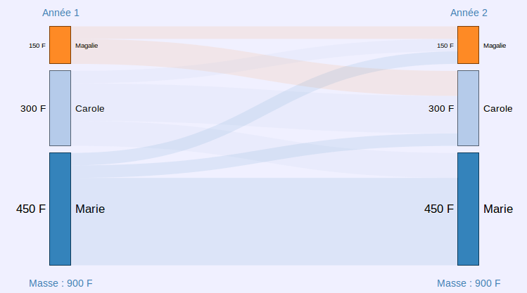
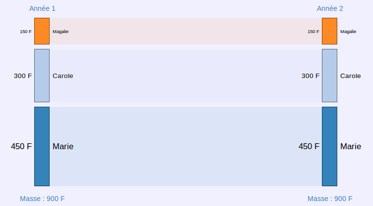
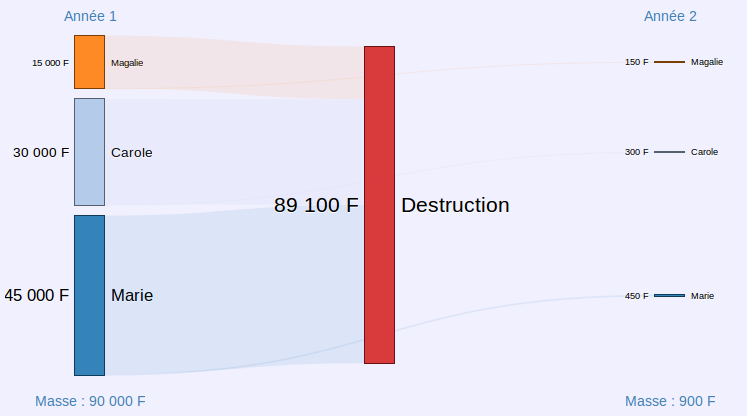
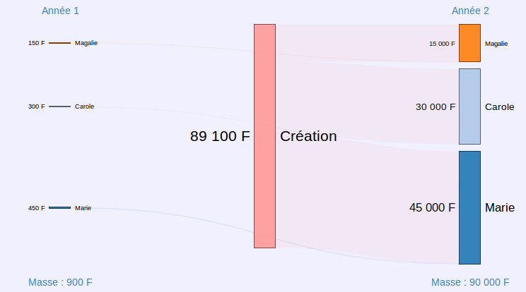
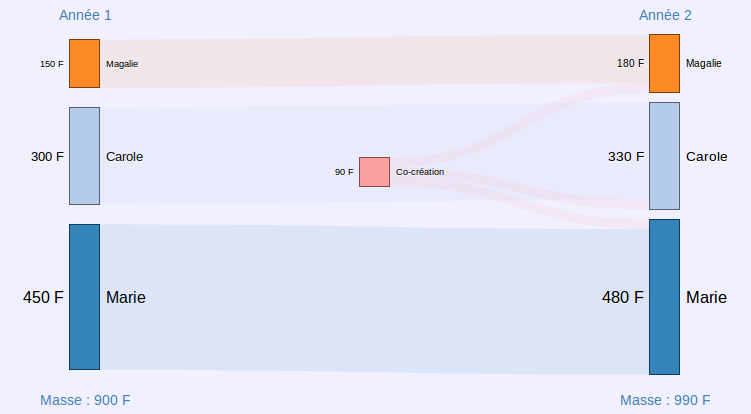
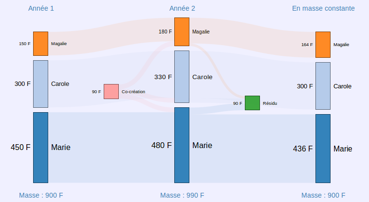
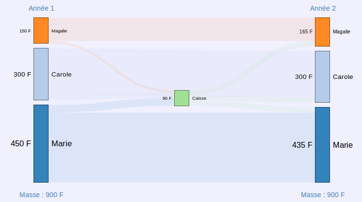

Boxing Universal Basic Income (original version here)
Introduction
Bank’s money … To have a little bit of it, people are selling their goods, or putting them in mortgage, others works for a salary … But who’s creating this money? And more important, how should this money be created to be equal for all? Many are rejecting those questions. Is it by ignorance, indulgence, resignation? Doest it reveal a special taste for authoritarianism?
This post particularly wants to highlight how absurd is the issue of the "financing" of the Basic Income. A serie of diagrams should clearly show that.
- The drop-down list allows you to go from one diagram to another.
- Information bubbles appear when you point certain parts of the diagrams.
- « A sankey diagram is a type of flow diagram where the width of the arrows is proportionnal to the represented flow. Sankey diagrams are particuliarly used to visualize energy transfer, gains or losses caused by a process. » Wikipedia.
- In order not to unnecessarily overload the diagrams, they are representing a community of only 3 members : Justine represents those who have an average repartition of the money supply, Amina represents those who are below and Liliane represents those who are above.
- the first diagrams can seem quite obvious, and even unapropriate, but I hope they will help many of you to understand the subject.
Balanced exchanges
Vision of the exchanges made between the three members of the community. The account of each remains unchanged between year 1 and year 2: to facilitate studies, we will always place ourselves in this particular case where the exchanges are globally balanced.
100 F: transfer
- from Amina
- to Justine
50 F: amount not exchanged by Amina
150 F: amount owned by Amina at the beginning of the year 1
150 F: amount owned by Amina at the end of the year 1
Balanced exchanges (simplified version)
Improvement of the readability of the particular case where the exchanges are globally balanced: we no longer see the movements made between each member during the year. This representation method will be used in the following diagrams, which will simplify the study.
150 F: amount that Amina has left after one year of exchange
150 F: amount owned by Amina at the beginning of the year 1
150 F: amount owned by Amina at the end of the year 1
Changeover from the old to the new franc
« December 27, 1958 sees the adoption of the Pinay-Rueff Plan which aims at the creation of the new franc. Called new franc, it is equivalent to 100 old francs; thus a product at 519 (old) francs will now cost 5.19 (new) francs, or 5 francs and 19 cents (division by 100). » Wikipedia.
Here we represent the thinking of an observer for whom the changeover to the new franc corresponds to the disappearance of 99% of the money and a huge deflation of prices. It's a quantitative vision of things. A vision relative to the money supply would simply make him think: before the changeover to the new franc, Amina owned 1/6, Justine owned 1/3 and Liliane owned 1/2; this is still the case after the changeover to the new franc and prices have remained unchanged.
« With this reform, De Gaulle and Pinay restored a prestigious franc […] » Wikipedia
This diagram shows a type of referential change (rule of three) that will be found later. The goal will be not to restore any prestige, but to facilitate comparisons.
150 F: amount that Amina has left after one year of exchange
- corresponds to the changeover to the new franc: 15 000 F / 100
14 850 F: amount withdrawn from the money supply
- from Amina, which is 99 % de 15 000 F
15 000 F: amount owned by Amina at the beginning of the year 1
- which is one sixth of the money supply
30 000 F: amount owned by Justine at the beginning of the year 1
- which is one third of the money supply
45 000 F: amount owned by Liliane at the beginning of the year 1
- which is half of the money supply
150 F: amount owned by Amina at the end of the year 1
- which is still one sixth of the money supply
300 F: amount owned by Justine at the end of the year 1
- which is still one third of the money supply
450 F: amount owned by Liliane at the end of the year 1
- which is still half of the money supply
89 100 F: total amount withdrawn from the money supply
- which is 99 % of 90 000
Back to old franc
Coming back to the old franc can be seen as an increase of 9 900 % of the money supply. It is actually a referentiel change (rule of three) that my grandparents often did. « How much is it in old francs? » has long been a very common question. This allowed them to make comparisons with references from the past. But for those who had never known the old franc, it produced a strange effect, as if there was a sudden inflation of 10 000 %.
A priori, this graph describes a calculation, a thought experiment that my grandparents realized regularly. But it could also represent a real reform restoring a franc of modesty. In many ways, the following diagram is similar …
150 F: amount that Amina has left after one year of exchange
- before going back to old franc
14 850 F: amount « created » to go back to old franc
- going to Amina, which is 99 % of 15 000 F
150 F: amount owned by Amina at the beginning of the year 1
- which is one sixth of the money supply
300 F: amount owned by Justine at the beginning of the year 1
- which is one third of the money supply
450 F: amount owned by Liliane at the beginning of the year 1
- which is half of the money supply
15 000 F: amount owned by Amina at the end of the year 1
- which is still one sixth of the money supply
30 000 F: amount owned by Justine at the end of the year 1
- which is still one third of the money supply
45 000 F: amount owned by Liliane at the end of the year 1
- which is still half of the money supply
89 100 F: amount « created » to go back to old franc
- which is 9900 % of 900
Universal Dividend via a monetary creation
This graph is very similar to the one about "Back to old franc". Of course, there is a major difference. In the case of the old franc, the share attributed to an individual is in proportion to what he had. In the case of the Universal Dividend (abbreviated as UD), the share allocated to an individual is the same for all: it is a proportion of the money supply (10%).
As a reminder, the Relative Theory of Money (abbreviated RTM) refers to that as co-creation of money: everyone creates the same part of the same currency, and this regularly over time - the objective being to not favor any individual, or any time. The implementation of this co-creation is not a subject of RTM. It could take different forms: delegation to a Central Bank or to a decentralized computer system like DUniter.
We can imagine that this co-creation process affects not only the accounts but also all prices, as during the changeover to the new franc.
150 F: amount that Amina has left after one year of exchange
30 F: share of Universal Dividend created by Amina
- which is one third of the Universal Dividend: 90 F / 3
150 F: amount owned by Amina at the beginning of the year 1
- which is one sixth of the money supply
300 F: amount owned by Justine at the beginning of the year 1
- which is one third of the money supply
450 F: amount owned by Liliane at the beginning of the year 1
- which is half of the money supply
150 F: amount owned by Amina at the end of the year 1
- which is now a little over a sixth of the money supply
300 F: amount owned by Justine at the end of the year 1
- which is still one third of the money supply
450 F: amount owned by Liliane at the end of the year 1
- which is now a little under half of the money supply
90 F: money co-created by the community
- also called Universal Dividend
- which is 10 % of the money supply 900 F
Universal Dividend via a monetary creation (steady money supply)
Compared to the previous diagram, a referential change (rule of three) is added in order to reduce the money supply to what it was before issuing the new money. It's a thought process very similar to what my grandparents did.
Of course, here, the calculation does not correspond to a simple shift of decimal point, it requires the use of a calculator. In this presentation, the practical implementation is not the subject, nevertheless, we can notice this: in the context of a fully digital currency, this type of calculation can be easily supported by the software.
This referential change facilitates the study of the effects of the Universal Dividend: some will see for Justine a neutral operation; for Amina, an increase; for Liliane, a decrease. It also allows comparison with the following diagram.
164 F: amount owned by Amina at the end of the year 1
- once money supply of year 1 is restored
- which is : 180 F / 990 * 900
16 F: résidu en provenance de Amina
- once money supply of year 1 is restored
- which is 180 / 990 * 90
150 F: amount owned by Amina at the beginning of the year 1
- which is one sixth of the money supply
300 F: amount owned by Justine at the beginning of the year 1
- which is one third of the money supply
450 F: amount owned by Liliane at the beginning of the year 1
- which is half of the money supply
180 F: amount owned by Amina at the end of the year 1
- which is now a little over a sixth of the money supply
330 F: amount owned by Justine at the end of the year 1
- which is still one third of the money supply
480 F: amount owned by Liliane at the end of the year 1
- which is now a little under half of the money supply
164 F: amount owned by Amina at the end of the year 1
- which is now a little over a sixth of the money supply
300 F: amount owned by Justine at the end of the year 1
- which is still one third of the money supply
436 F: amount owned by Liliane at the end of the year 1
- which is now a little under half of the money supply
90 F: money co-created by the community
- also called Universal Dividend
- which is 10 % of the money supply at the beginning of the year 1
90 F: residue resulting from going back to the referential of beginning of the year 1
- which is 10 % of the money supply at the beginning of the year 1
Universal Basic Income via a tax
Now let's look at the "financing" - in inverted commas - of an Universal Basic Income (abbreviated as UBI). Every year, a 10 % tax is levied on all accounts; the result of this tax is then redistributed in equal parts to everyone, which constitutes the UBI.
A first thing is striking: Justine owns a third of the money supply, either before or after distribution of the UBI. But paying more attention, we notice better: for Amina and Liliane, the values are almost the same as in the case of UD seen in steady money supply (see the previous diagram). In fact, this is not a coincidence, Stéphane Laborde demonstrated that there was mathematically perfect equivalence.
Here, money is not co-created by humans who use it, it is created by banks. So, is it the UD that is hiding a financing? Or is it the UBI that hides a non-co-creation of the money?
30 F: distribution of UBI to Amina
- coming from the Fund, which is 90 F / 3
135 F: amount that Amina has left after one year of exchange
- after application of the tax « financing » the UBI
15 F: tax levied on Amina to « finance » the UBI
- which is 10 % of 150 F
150 F: amount owned by Amina at the beginning of the year 1
- which is one sixth of the money supply
300 F: amount owned by Justine at the beginning of the year 1
- which is one third of the money supply
450 F: amount owned by Liliane at the beginning of the year 1
- which is half of the money supply
165 F: amount owned by Amina at the end of the year 1
- which is now a little over a sixth of the money supply
- this value is strangely similar to that obtained with the Universal Dividend
300 F: amount owned by Justine at the end of the year 1
- which is still one third of the money supply
435 F: amount owned by Liliane at the end of the year 1
- which is now a little under half of the money supply
- this value is strangely similar to that obtained with the Universal Dividend
90 F: total taxes levied to « finance » the UBI
- which is 10 % of the money supply 900 F